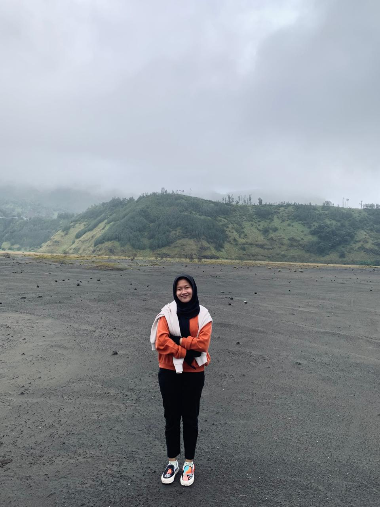

Some Memorable Photos
"Sunset"
Watching the sunset is one of my favorite things to do. Because seeing it makes me happy and calm about the natural gradations that it gives off from the colors that it has. Plus if we see it on the beach, then the beauty looks even more perfect. The waves that sweep across the sand are accompanied by the twilight sky that will fade to the west.
"GSM"
GSM is an organization engaged in teaching or serving children who need education. From GSM I know that there are still many people out there who need more knowledge about history, science, etc. Therefore GSM was established to be able to help Indonesian children who still need knowledge, so that they can also feel what it's like to learn with friends "knowing anatomy, recognizing letters etc. I am also more grateful after getting to know the children out there, even though they do not have the funds for school, but they still have the determination and enthusiasm in learning.
"Malang"
I love traveling. Malang is one of the places I visited, Malang is one of the cities that has many tourist attractions, one of which is Bromo. When I went to Bromo I was unlucky, because it was cloudy, therefore I could not see the sunrise from the top of Mount Bromo, it was very unfortunate.
